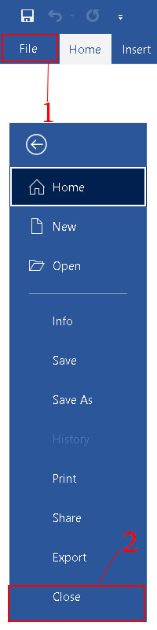
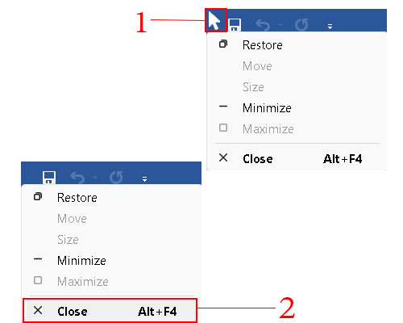

1.คลิกปุ่มลูกศรด้านล่างขวาของ Font หรือกดปุ่ม Ctrl+D
2.ปรากฏหน้าต่าง Font ตั้งค่าที่ Latin text (ข้อความละติน) ดังนี้
Font :(แบบอักษร) เลือก Angsana New
Font Style :(ลักษณะแบบอักษร)เลือก Regular (ธรรมดา)
Size :(ขนาด) เลือก 16
3.คลิกปุ่ม Set As Default (คั้งเป็นค่าเริ่มต้น) เพื่อครั้งต่อไปเปิดใช้งานจะได้ไม่ต้องกำหนดฟอนต์ใหม่
4.ปรากฏหน้าต่าง ถามเกี่ยวกับการเปลี่ยนแปลงค่าเริ่มต้นของแบบอักษร ให้เลือก All documents nased on the Normal.dotm template? คือนำไปใช้กับเอกสารทั้งหมด (ถ้าเลือก This document only? จะใช้กับเอกสารนี้เท่านั้น)
5.คลิกปุ่ม OK (ตกลง)
6.การออกจากโปรแกรม Microsoft Word
เมื่อต้องการออกจากโปรแกรม Microsoft Word การปิดหรือออกจากโปรแกรมอย่างถูกวิธี ช่วยป้องกันไม่ให้ข้อมูลหรือโปรแกรมได้รับความเสียหาย สามารถใช้คำสั่งได้ ดังนี้
วิธีที่ 1 ใช้เมนูคำสั่ง
1.คลิกแท็บ File (ไฟล์)
2.คลิกรายการ Close (ปิด)
|
วิธีที่ 2 ใช้ปุ่มควบคุม Close (ปิด)
1.คลิกปุ่ม Close (ปิด) มุมบนด้านขวาของหน้าต่างโปรแกรม หรือกดปุ่ม Ctrl+F4
|
วิธีที่ 3 ใช้การคลิกเมาส์บริเวณมุมบนซ้าย
1.คลิกเมาส์ซ้าย 1 ครั้งที่บริเวณมุมบนซ้ายของหน้าต่างโปรแกรม จะปรากฏเมนูทำหน้าที่เดียวกับปุ่มควบคุมหน้าต่าง
2.คลิกรายการ Close เพื่อออกจากโปรแกรม (ทั้ง2 ขั้นตอนสามารถใช้การดับเบิลคลิกที่มุมบนซ้ายแทนได้

|
|